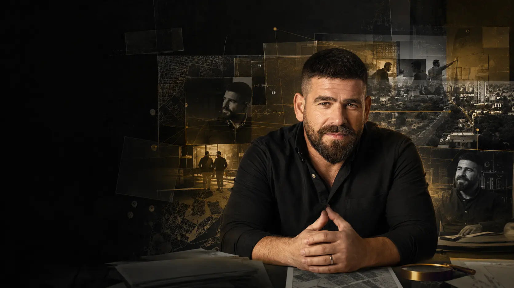

7YA / REGISTRO VIVO · ESPAÑOL
UNA VIDA.MUCHAS PUERTAS.
No es un currículum ni una página «Acerca de». Es el internet personal de Igor Vepretski: una vida que conecta pertenencia, servicio público, creación, StartOn, medios, investigación y construcción de sistemas.
IGOR VEPRETSKIאיגור ופרצקיИГОРЬ ВЕПРЕЦКИЙ
1990 → AHORA / LA LÍNEA HUMANA
No una historia de éxito.
Una historia de reconstrucción.
El sitio conserva la cronología como memoria pública: lo vivido, lo documentado y lo que todavía necesita contexto no se mezclan como si fueran lo mismo.
CONTENIDO → PERSONAS → CONVERSACIÓN
Lo publicado no se queda en una métrica.
7YA conserva el objeto, la fuente, la fecha y el contexto. El impacto se muestra por pieza y por evidencia; no se fabrica un número total sintético.
Experiencias personales que se convierten en lenguaje público.
Entrevistas y conversaciones que amplían un tema sin borrar su origen.
Capturas, enlaces y fuentes que permiten volver a comprobar lo publicado.
PUBLIC RECORD / ABRIR · MIRAR · COMPROBAR
Fuentes reales.
Imágenes reales.
Cada tarjeta abre el material de origen. Las imágenes de IA no se presentan aquí como documentación.

MYNET · 13.05.2022Volver al barrio para construir una nueva oportunidadAbrir fuente ↗

PUBLICACIÓN · 2023Una historia personal de paternidad que cruzó plataformasAbrir fuente ↗

VIDEO · STARTON · 2022El espacio físico: tecnología, creación y comunidadVer video ↗

MÚSICA · 2025NAWAN ft. VEPRETSKI — BIZZIReproducir ↗

STARTON · OPORTUNIDAD · PERTENENCIA
Volver con más herramientas.
StartOn conecta tecnología, creación, mentores, comunidad y un espacio seguro para jóvenes que necesitan oportunidades. En 7YA se presenta como trabajo y misión documentados — no como prueba automática de resultados que todavía deben medirse.
Abrir StartOn ↗
INVESTIGACIÓN
Preguntas antes que afirmaciones.
Identidad, memoria pública, oportunidad, sistemas y medios se organizan con fuentes, estados de evidencia y límites visibles.
Entrar a investigación ↗CREACIÓN
La música también pertenece a la biografía.
Canciones, clips y colaboraciones permanecen dentro del mismo registro de vida, no escondidos en un pie de página.
Abrir música y clips ↗PERSONA → FUENTE → ACCIÓN
La historia no termina aquí.
Explora las fuentes, abre el archivo o inicia una conversación con una pregunta concreta.